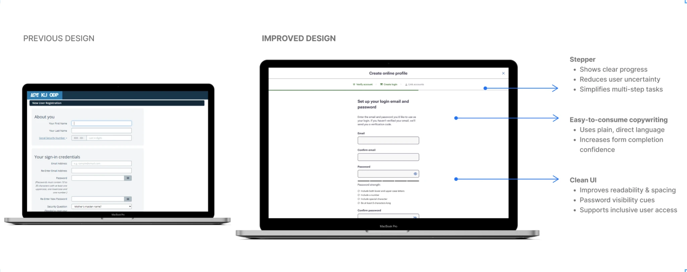
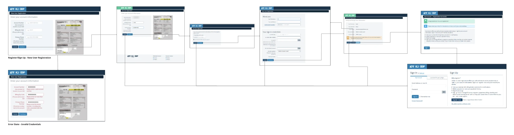
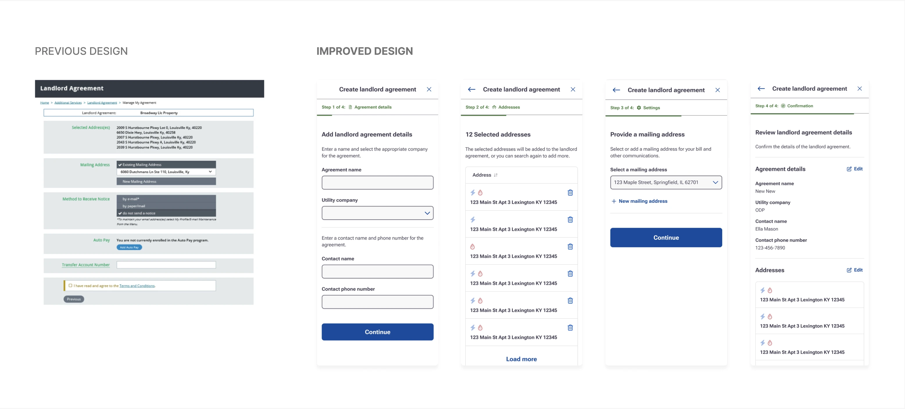
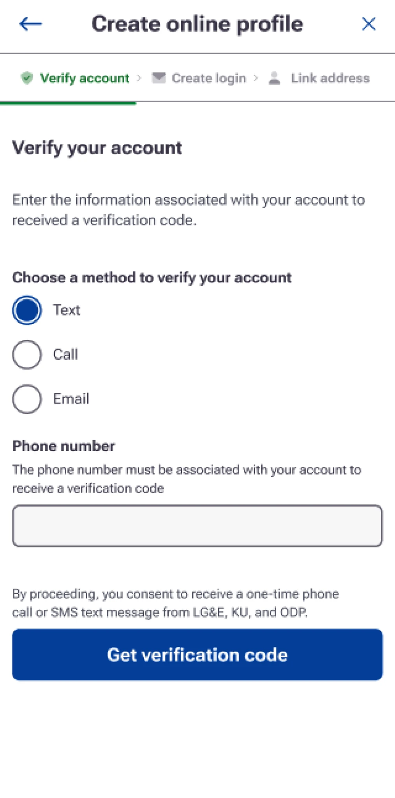

Three utilities. Three ways of doing everything. One system to bring them together.
A Fortune 500 energy provider was consolidating three utility companies, each with its own systems, language and design standards. I helped design the shared components, copy patterns and governance that made one consistent customer experience possible.
- Role
- UX designer + copywriter
- Engagement
- Accenture consultant, embedded at PPL Electric Utilities
- Timeline
- 6 months
- Tools
- Figma, Miro
- Team
- 3 UX/UI designers, 2 copywriters

One company on paper. Three experiences in practice.
The three utilities had operated as separate organizations, each with its own digital experiences, systems and workflows.
As they came together, customers risked an experience that felt inconsistent and confusing: different screens, different words, different rules.
How might we create standards that scale across three utilities and are easy for every team to adopt?
What the audit found

Designing the screens and the words together.
- Audited existing experiences for inconsistent UI patterns, terminology and workflow logic
- Designed reusable components and redesigned MVP features
- Wrote and standardized UX copy patterns for CTAs, errors, alerts and forms
- Owned governance end to end: a live UX Writing Guideline and Content Library used by the UX/UI design team and the communications and marketing team
- 01AuditUI, terms, workflows
- 02PrinciplesClarity, guidance, accessibility
- 03Components100+ in Figma
- 04Copy patterns50+ standardized
- 05GovernanceGuidelines + content library
These weren't isolated UX issues. It was a problem of scale.
Three principles every team could follow.
Clarity
Plain, actionable words and a clear visual hierarchy, so customers always know what to do next.
Guidance
Step-by-step flows, steppers and progress cues that walk people through complex tasks.
Accessibility
Better contrast, spacing, type and labels, built into the components so every team gets it by default.
Two calls that put customers first.
How much should onboarding explain?
The call: guidance is what makes a complex flow feel simple, and it became a reusable pattern every utility could share.
Whose language do we design in?
The call: one customer-first vocabulary, documented in the Content Library, so three utilities finally spoke the same language.
Shared components, shared language.


The same patterns, on every screen size.
- Stepper: shows where you are and what's next
- Plain instructions: every step explains what to do and why
- Clear choices: simple options instead of dense forms
A single source of truth for three utilities.
reusable Figma components, with rules for how they behave across utilities
UX copy patterns standardized in a UX Writing Guideline and Content Library
MVP features redesigned to be more intuitive
"Consistency at scale isn't a UI kit. It's shared patterns, shared language and the governance that keeps teams using them."